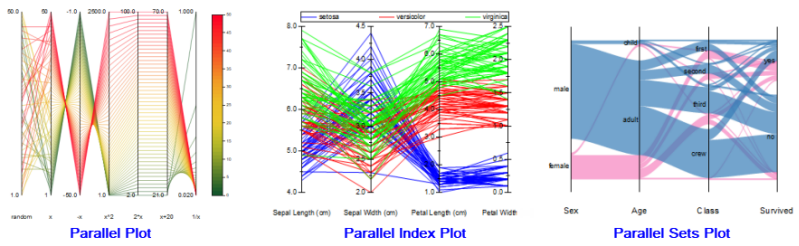

Parallelsatzdiagramm
Parallel-Sets

Datenanforderungen
Wählen Sie mindestens zwei Y-Spalten oder einen Wertebereich aus mindestens zwei Spalten aus. Die Diagrammzuweisung macht keinen Unterschied; ausgewählte Spalten werden wie Y-Spalten behandelt.
Diagramm erstellen
- Wählen Sie die gewünschten Daten aus.
- Wählen Sie Zeichnen > Kategorial: Parallelsätze/Parallelsatz mit Gewichtung.
Informationen zum benutzerdefinierten Anpassen von Paralleldiagrammen finden Sie unter folgenden Themen:
Vorlage
ParellelSet.otpu (im EXE-Verzeichnis von Origin installiert)
Hinweise
Origin unterstützt drei unterschiedliche Typen von Paralleldiagrammen:
-
- 
- Das einfache Paralleldiagramm (Zeichnen > Einfache 2D: Paralleldiagramm: Paralleldiagramm) zeichnet Variablen auf kontinuierliche (numerische) Skalen und verwendet eine Farbskala für die Diagrammlegende.
- Das Parallelindexdiagramm (Zeichnen > Kategorial: Paralleler Index) zeichnet die Variablen auch auf kontinuierliche Skalen, verwendet aber eine Gruppierungsspalte (eine Spalte der kategorialen Daten), um die Legende zu erstellen und eine Zeichnungsfarbe zuzuweisen.
- Das Parallelsatzdiagramm (Zeichnen > Einfache 2D: Paralleldiagramm: Parallelsätze/Parallelsatz mit Gewichtung) zeichnet kategoriale Variablen auf jede Achse.
Wenn Sie nur kategoriale Daten haben, um ein Parallelsatzdiagramm zu zeichnen, wählen Sie Zeichnen > Kategorial: Parallelsätze, um diese Flüsse zu zeichnen. Die Breite der Verbindungen zwischen den Achsen wird von der Anzahl der Verbindungen entschieden. Wenn Sie zusammengefasste Daten haben (Arbeitsblatt mit mehreren Beschriftungsspalten und eine Wertespalte), wählen Sie Zeichnen > Kategorial: Parallelsatz mit Gewichtung, um die Flüsse zu zeichnen und zu gewichten. Die Breite der Verbindungen zwischen den Achsen wird von der letzten Wertespalte entschieden.
Wenn Sie eine Wertespalte per Drag&Drop in ein Paralleldiagramm ziehen, wird die neue Spalte zur letzten hinzugefügt.